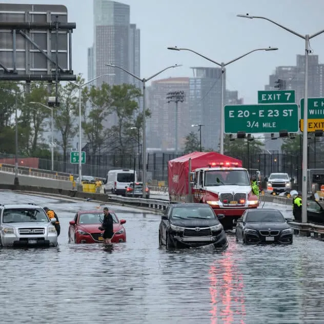

Climate
Climate Crisis Makes Storms Like the One That Just Flooded NYC up to 20% Wetter, Study Finds
It’s no secret that extreme weather is becoming more frequent due to climate change, bringing wetter and more damaging storms. The storm that brought a deluge of rainfall to New Jersey and New York on Sept. 29 was exceptionally moist, drenching New York City’s JFK airport in more than 7.87 inches of rain, breaking the […]